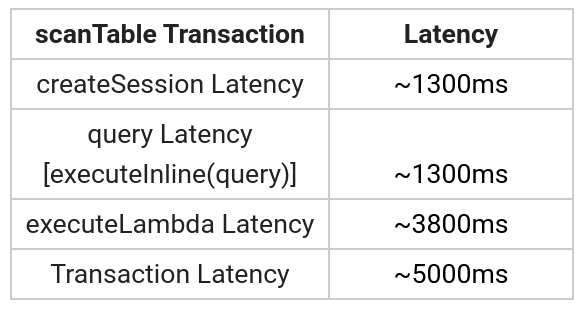

QLDB high latency of ~5000ms
I am using the "aws-sdk:^2.576.0" and "amazon-qldb-driver- nodejs:0.1.0-preview.2", and following the node-sdk's sample code for qldb. I am calling the node-sdk functions via the REST APIs exposed.
So for the read table operation, i.e., SELECT * query (scanTable from the
sample code), following is the latency breakdown:

I'm getting a new session for every transaction from the session pool using
pooledQldbDriver.getSession() and have a decent internet connection of
nearly 100mbps.
Is this much latency expected? Am I doing something wrong, and how can it be reduced further?
Answer
(As per the comments in your question.)
Right now you're measuring the latency between India and us-west-2, not the latency of QLDB operations. Please use a region that has lower latency (https://docs.aws.amazon.com/general/latest/gr/qldb.html) or rely on the server-side metrics that you should be able to find in the CloudWatch console.